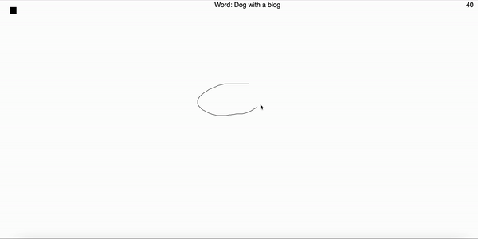
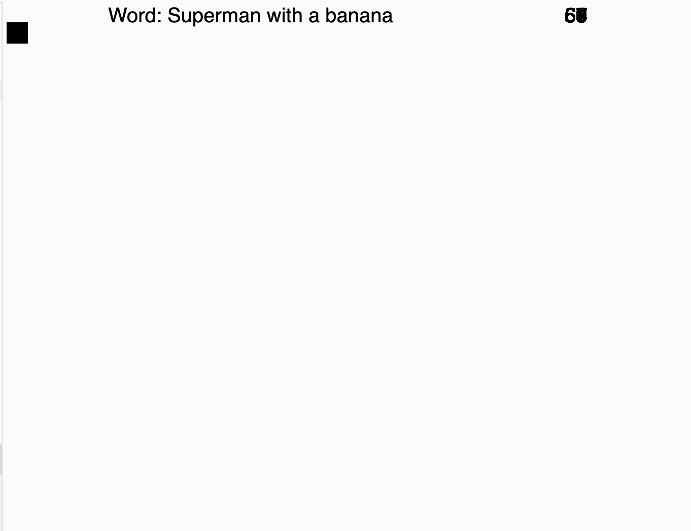

My project consists of an implementation of a singe player skribblio like game. For those that may not know this game, essentially it involves getting prompted with a random word and then having to draw that word within a given time limit.
Here is a gif of my game.
To run this code you can go to my github repo which is listed below and clone my prototype repo. You can copy the code in both index.js and snake.html and put it into p5 and play the game.
Github RepoMy step by step process consisted of:
Here is an image of an unfinished state of my website.
One of the problems I faced was not being able to get my code working locally. I was able to get assistance from Hannah in which she showed me that I needed to add treeshake: false statement in my rollup.config.js as well as get rid of type module in my script in index.html.
Another problem I faced was that for my timer the numbers were overlapping on top of one another. Andy and Alfie were able to help me by telling me in my draw function to put in a rectangle block over the number that would essentially cover the old number and then put the new number on top. In this way, it was able to show each second without it overlapping on the previous one.
My project scope hasn't changed since I completed my prototype. I think I'm on track to get where I wanted to for the final project and could potentially look to implement one of my stretch goals if I have the time. If not, I will definitely be able to meet what I had set out for my final project.
The amount of time I spent on building my prototype was consistent with the initial plan I had set out. I thought it would take me close to the full week from when I started working on it till when it was due, which was true. Some unanticipated roadblocks I had were with getting the timer to not overlap on itself but was able to problem solve it with the help from my peers. I also wasn't able to check my game in my localhost but by getting help from Hannah I was able to resolve those. Besides these setbacks, everything else went rather smoothly.
My implementation plan has not changed for my final version after completing my prototype. The plan is still what I thought it would be when I started. For this next step, I will just be doing some more research on additional features I hope to implement and then looking to implement them.
Additional ideas and features I might like to add to my site in the future: